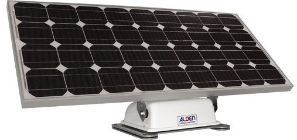

Bienvenue sur la page de M Nicolas TALEC-BERNARD élève de BTS1 SN à VAUBAN BREST.
Ces pages contiennent le compte rendu de mon travail sur le panneau solaire utilisé en mode caravaning suivant les directives ALDEN.
